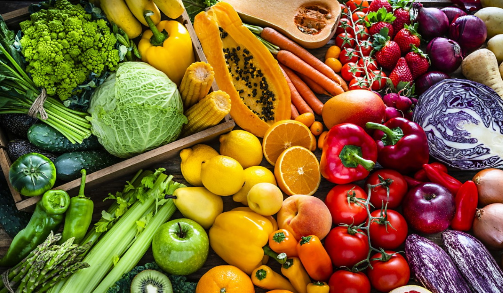

A fome está ligada à pobreza, desigualdade, mudanças climáticas e conflitos.
A agricultura sustentável é essencial para alimentar o mundo sem destruir o meio ambiente.
Garantir nutrição adequada também é essencial para o desenvolvimento humano e econômico.

Metas do ODS 2
O Objetivo de Desenvolvimento Sustentável (ODS) número 2, conhecido como "Fome Zero e Agricultura Sustentável", tem várias metas específicas que buscam acabar com a fome e melhorar a nutrição. As principais metas incluem:
Erradicar a fome: Até 2030, acabar com a fome e garantir o acesso de todas as pessoas, especialmente os mais vulneráveis, a alimentos seguros e nutritivos durante todo o ano.
Acabar com a desnutrição: Isso inclui atender às necessidades nutricionais de crianças, adolescentes, mulheres grávidas e lactantes, e idosos, além de reduzir todas as formas de desnutrição.
Aumentar a produtividade agrícola: Dobrar a produtividade e a renda dos pequenos produtores de alimentos, especialmente mulheres e comunidades indígenas, garantindo acesso igualitário a recursos produtivos.
Promover práticas agrícolas sustentáveis: Implementar sistemas de produção de alimentos que sejam sustentáveis e resilientes, ajudando a manter os ecossistemas e a qualidade do solo.
Manter a diversidade genética: Proteger a diversidade genética de sementes e plantas cultivadas, garantindo o acesso e a repartição justa dos benefícios decorrentes da utilização dos recursos genéticos.